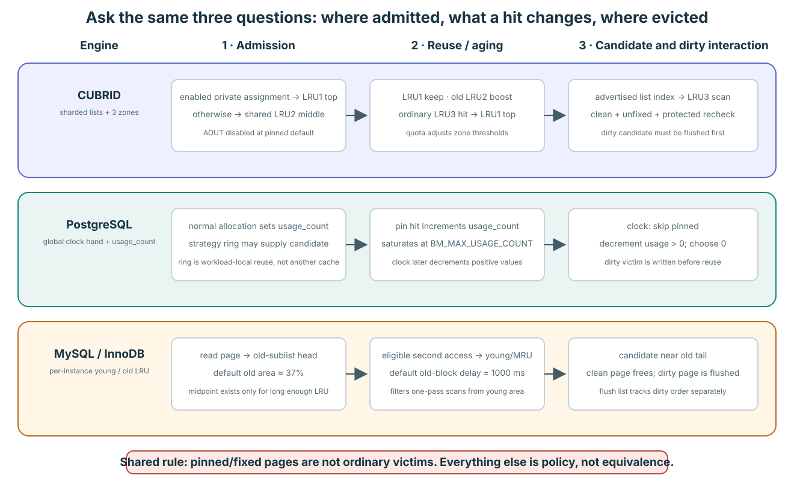

Compare the same four questions
For each engine ask: where does a newly read page enter, what reuse information is remembered, how is a candidate found, and what makes actual reuse legal? Without reuse information, selection loses its estimate of future usefulness; without eligibility protection, even a good estimate can overwrite an in-use or dirty page. Different policies can satisfy the same safety responsibilities.
PostgreSQL uses a clock hand and bounded reuse credit rather than recency-linked shared descriptors. InnoDB uses young/old regions of a resident LRU per pool instance. CUBRID uses private/shared domains and three zones, with protected candidate checks. These labels do not establish which engine is faster.
PostgreSQL: inspect, age, skip, claim
Constructed example: no concurrent changes, no strategy-ring reuse, global hand at A. This is a window of a larger pool. A is unpinned with usage_count 2: decrement to 1 and continue. B is pinned with usage_count 0: skip. C is unpinned, clean, with usage_count 0: atomically pin it as a candidate. Invalidation still rechecks the state. A dirty candidate can instead require conditional locking and flushing, then another validation.
PinBufferForBlock
→ BufferAlloc
→ GetVictimBuffer
→ StrategyGetBuffer
→ ClockSweepTickExpand source locations
Source: bufmgr.c:1223–1251 · bufmgr.c:2268 · bufmgr.c:2548–2671 · freelist.c:239–317
Usage credit is not a timestamp or lifetime hit count. Default first pin by a backend can raise it up to 5; nested pins held by that backend do not keep raising shared credit. Access-strategy rings take a different first route and contain shared-buffer IDs, not a separate privately owned pool.
InnoDB: inspect the old tail, then retry the free list
Constructed example: one pool instance, an established old region in a list longer than 512 entries, empty free list, no compressed-page alternative, and no races. Starting at the tail, A is buffer-fixed: skip. B is dirty: skip for clean eviction. C is clean and relocatable: evict. The allocation loop returns to the free list to obtain a block. Under concurrency another thread can take that block first.
buf_LRU_get_free_block
→ buf_LRU_scan_and_free_block
→ buf_LRU_free_from_common_LRU_list
→ buf_LRU_free_pageExpand source locations
Source: buf0lru.cc:517–580 · buf0lru.cc:300–382 · buf0lru.cc:956 · buf0flu.cc:476–497
Disk-read admission goes just after LRU_old when the old region exists. A newly created page enters young, and short lists use head insertion. Once eviction has begun, the default old-page time gate requires a qualifying access at least 1,000 ms after the first logical access; time passing alone does not promote a page. Old and young both contain resident pages, not ghost entries. Without midpoint admission and delayed promotion, another policy would need to resist scan pollution.
What each engine remembers and how it finds candidates

The shared hard rule is simple: a fixed or pinned frame is not an ordinary victim. Admission, hotness memory, candidate order, and dirty handling are implementation policy.
| Question | CUBRID | PostgreSQL | MySQL / InnoDB |
|---|---|---|---|
| What is ordered? | Many doubly linked private/shared LRUs, each split into LRU1/LRU2/LRU3. | No recency list for normal shared buffers; one atomic clock hand walks the descriptor array. | One doubly linked young/old LRU per buffer-pool instance. |
| What remembers reuse? | Zone, list position/ticks, and adaptive per-list activity/quota. | A small resident usage_count, maximum 5. | Young/old position, first-access time, and eviction-clock distance. |
| Where is the candidate? | LRU3 of one policy-selected list. | First unpinned zero-count descriptor reached by the clock. | A clean relocatable page scanned backward from the old tail. |
CUBRID: choose a domain, then inspect LRU3
Private/shared lists and three zones organize candidate preference. Ordinary reuse requires clean state and protected checks of users, waiters and other state. AOUT is disabled at this revision.
Expand implementation details and sources
- Admission: at the pinned AOUT-disabled baseline, a newly loaded VOID BCB enters private S+p at LRU1 top when its final-unfix execution context has an enabled private-LRU assignment; otherwise it enters shared LRU2 middle.
- Reuse: LRU1 stays in place. An LRU2 page returns to LRU1 only when its list-tick age is at least half the current LRU2 count. Ordinary LRU3 reuse returns to LRU1.
- Victim: the allocator consumes an advertised LRU index, locks that list, and examines at most 1,000 LRU3 BCBs. Every candidate still needs clean/unfixed/waiter-free identity revalidation.
- Scale: lists and mutexes shard ordering. Private quotas use activity; their LRU1 and LRU2 thresholds are each 5% of quota. Shared defaults are 40% and 5% of the shared target.
Pinned CUBRID: admission and hit transitions, bounded LRU3 scan, and quota adjustment.
PostgreSQL: the clock reduces reuse credits
Instead of an exact recency rank, it uses a bounded usage count. The clock skips pinned buffers, decrements positive counts, and claims an unpinned zero-count candidate. Dirty candidates may require flushing and revalidation.
Expand implementation details and sources
- Admission: a newly claimed shared descriptor receives
usage_count = 1. - Reuse: the first pin by a backend increments shared
usage_countup to 5. A nested pin by the same backend changes only its private refcount, so it earns no second shared credit. - Victim: the atomic clock hand advances through buffer descriptors. It skips pinned buffers, decrements an unpinned positive count, and claims an unpinned zero. A count of 5 may therefore survive up to six full visits.
- Bulk scans: backend-local strategy rings reuse a small set of IDs for bulk read/write and vacuum. They still name frames in the shared pool; they are not private buffer pools.
usage_count = 2 have no “older one first” relation. The count is bounded reuse credit decayed by clock visits, not a timestamp or linked-list rank.Pinned PostgreSQL: clock selection, maximum usage count 5, and strategy-ring sizes.
InnoDB: admit into old and observe reuse
In a list with an old region, disk-read pages enter at the old boundary. A qualifying later access can promote them to young. Newly created pages and short lists have different admission rules. Time passing alone does not promote a page.
Expand implementation details and sources
- Topology: each buffer-pool instance owns an LRU, free list, and flush list. Once the LRU has at least 512 entries,
LRU_oldsplits one physical list into young and old regions. - Admission: once the old region is established, a disk-read page enters immediately after its boundary. Short lists admit at the LRU head. The old target defaults to 37%. A page created directly in memory enters at the young head.
- Reuse: an old page normally needs another access at least
innodb_old_blocks_timeafter first access before promotion to the young head; the default delay is 1,000ms. - Victim: allocation takes a free block or scans from the old tail for a clean relocatable page. The first common foreground scan is capped at 100 entries; a later pressure iteration may scan the whole LRU.
Pinned MySQL/InnoDB: midpoint insertion, disk-read caller, 37% and 1,000ms defaults, and free-block pressure loop.
Writeback progress remains a separate mechanism
| Engine | When the candidate is dirty | Background help |
|---|---|---|
| CUBRID | Ordinary detach requires clean. Dirty LRU3 stays resident until generation-aware flush makes it clean. | Page-flush and post-flush/direct-victim progress cooperate with waiting allocators. |
| PostgreSQL | The clock may select a dirty unpinned buffer. The allocating backend can conditionally lock, flush, and revalidate it. | The background writer cleans likely near-future victims ahead of demand. |
| InnoDB | Immediate replacement needs clean. Foreground pressure may flush one dirty tail page and retry the free list. | Page cleaners pursue both LRU-tail free-page targets and redo/flush-list targets. |
“Cold” answers where to look. “Clean and unowned” answers whether reuse can proceed now.
Similar names do not imply identical behavior
All three protect frames in use, but differ in how they remember reuse and find candidates. Comparing performance requires measurements with controlled workloads and configurations.
Expand implementation details and sources
| Tempting shortcut | Correction |
|---|---|
| “CUBRID LRU3 equals InnoDB old.” | Both are cold regions, but admission, number of domains, promotion gates, and candidate scans differ. |
| “PostgreSQL clock is approximate LRU.” | usage_count is bounded credit with no recency ordering among equal counts. |
| “A PostgreSQL strategy ring is a CUBRID private LRU.” | A ring is a backend-local array of shared-buffer IDs; a CUBRID private LRU is a pool-global linked residency/quota domain. |
| “InnoDB old/new is 2Q.” | Both regions hold resident pages; there is no general evicted-identity ghost queue in this path. |
Compare candidate selection, not names
Can a recently used page become a replacement candidate? Separate reuse information from safety conditions in each engine.
Show explanation
CUBRID uses domains and zones, PostgreSQL uses usage credits, and InnoDB uses young/old placement. Candidate preference is separate from actual frame reuse, which also needs protection of active users and dirty handling. Policy names alone do not establish a performance winner.